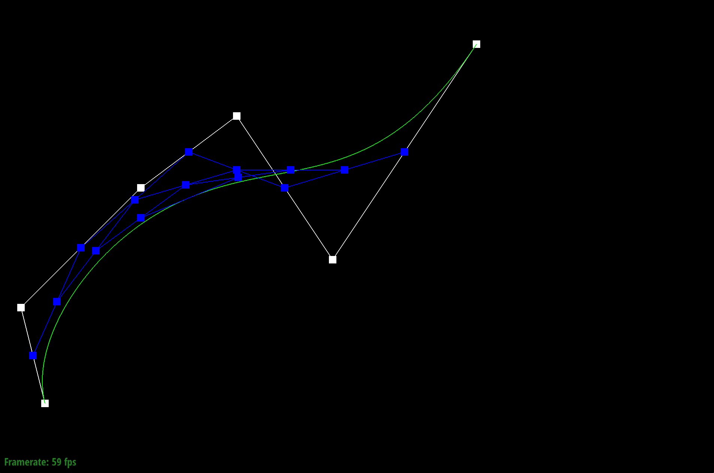
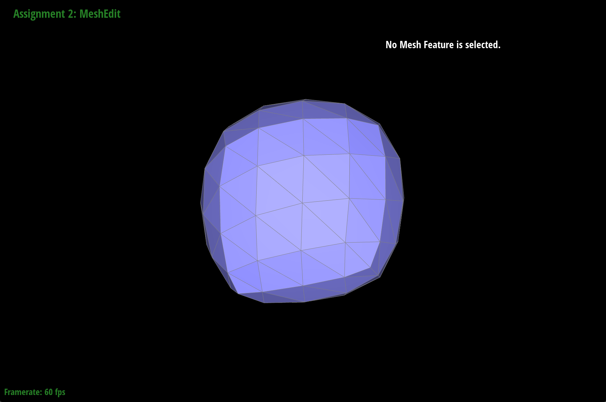

Overview
This project covers geometric modeling and is divided into 2 sections with 6 parts total.
Section I: Bezier Curves and Surfaces
Part 1: Bezier curves with 1D de Casteljau subdivision
Part 2: Bezier surfaces with separable 1D de Casteljau
Section II: Triangle Meshes and Half-Edge Data Structure
Part 3: Area-weighted vertex normals
Part 4: Edge flip
Part 5: Edge split
Part 6: Loop subdivision for mesh upsampling
In this project, we were able to utilize concepts such as Bezier curves in order to model smooth curves/surfaces. Additionally,
we were able to put triangle meshes onto 3D models with use of the Half-Edge Data Structure.
Section I: Bezier Curves and Surfaces
Part 1: Bezier Curves with 1D de Casteljau Subdivision
Casteljau's algorithm is an algorithm that recursively inserts points onto edges. This repeated process allows us to reach a point that lies on the Bezier curve.
The function, evaluate_step, performs one subdivision. It takes in a vector of 2D points and outputs a vector of intermediate control points at the parameter t in the next subdivision.
Using a for loop, we iterate through the input vector of points and perform linear interpolation to compute the intermediate control point between every two points. We add these new points
to our output vector using the push_back method.
The linear interpolation equation is as follows:

|

|
|
|

|
|
|
Part 2: Bezier Surfaces with Separable 1D de Casteljau
We can apply Casteljau's algorithm again but instead of curves, we'll be adapting it to work with surfaces.
To do this, we'll use a 2D vector made of n x n original control points. Each row in this 2D vector will define a Bezier curve parameterized by u.
Additionally, every column will define a Bezier curve parameterized by v.
We'll be implementing three functions.
evaluateStep
- input: vector of 3D points and parameter t
- output: vector of intermediate control points at the next subdivision level at parameter t
- implementation: (similar to part 1)
- input: vector of 3D points and parameter t
- output: the final, single point that lies on the Bezier curve
- implementation: create a new vector with original points, run evaluateStep with parameter t on the new vector until its size == 1, then return final point
- input: two doubles u and v
- output: the point that lies on the Bezier surface
- implementation: create a new vector, for each row (curve) run evaluate1D with parameter u and add to new vector, return evaluate1D with new vector with parameter v
Section II: Triangle Meshes and Half-Edge Data Structure
Part 3: Area-Weighted Vertex Normals
For this part, we computed area-weighted vertex normals for Phong shading. To do this, we implemented the function, normal().
This function uses the half-edge data structure to iterate over neighboring faces. The half-edge data structure consists of half-edges that
have pointers to connecting vertices. For each face, we compute the area and normal. The normal is calculated by taking the cross-product of two vectors along the face.
Then, we weight the normal by its area and add it to the sum. Finally, we divide this sum of area_weighted_normals by the number of faces we iterated over.
|
|
|
Part 4: Edge Flip
To implement the edge flip operation, we used this reference sheet
provided by the course.
We broke it down into two phases. In the first phase, we collect the elements (halfedges, vertices, edges, and faces) in the "before" picture.
In the second phase, we reassign the elements according to the "after" picture by updating the pointers for the all the elements that are affected by the flip.
implementation/debugging tricks
|
|
|
|
|
|
Part 5: Edge Split
The way we implemented this part is similar to part 4. The only thing different is we had to create some new elements.
|
|
|
|
|
|
Part 6: Loop Subdivision for Mesh Upsampling
Briefly explain how you implemented the loop subdivision and describe any interesting implementation / debugging tricks you have used.
In order to increase the number of triangles in the mesh we implemented loop subdivision where each triangle is subdivided into four smaller triangles.
Our implementation is carried out in 5 steps.
1. Compute new positions for all the vertices in the input mesh, using the Loop subdivision rule,
and store them in Vertex::newPosition. At this point, we also want to mark each vertex as being
a vertex of the original mesh.
2. Compute the updated vertex positions associated with edges, and store it in Edge::newPosition.
3. Split every edge in the mesh, in any order. For future reference, we're also going to store some
information about which subdivide edges come from splitting an edge in the original mesh, and which edges
are new, by setting the flat Edge::isNew. Note that in this loop, we only want to iterate over edges of
the original mesh---otherwise, we'll end up splitting edges that we just split (and the loop will never end!)
4. Flip any new edge that connects an old and new vertex.
5. Copy the new vertex positions into final Vertex::position.
Take some notes, as well as some screenshots, of your observations on how meshes behave after loop subdivision. What happens to sharp corners and edges? Can you reduce this effect by pre-splitting some edges?
After loop subdivision, sharp corners and edges are rounded out.
|
|
|
When performing loop subdivision, this cube becomes slightly asymmetric after repeated subdivisions. Why?
We can pre-process the cube with edge flips and splits so that the cube divides symmetrically.
|
|
|
|

|
|
|
|
|
|
|
https://cal-cs184-student.github.io/project-webpages-sp23-natedyre/proj2/index.html